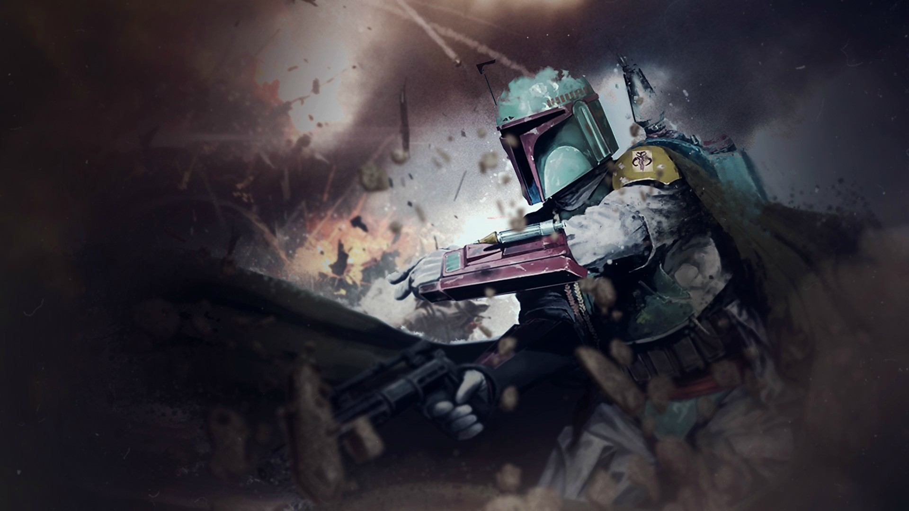
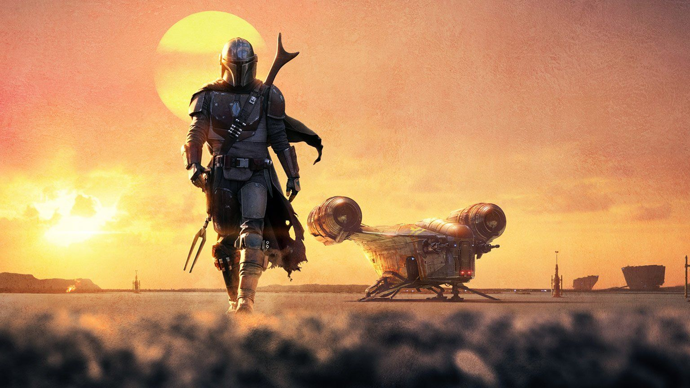
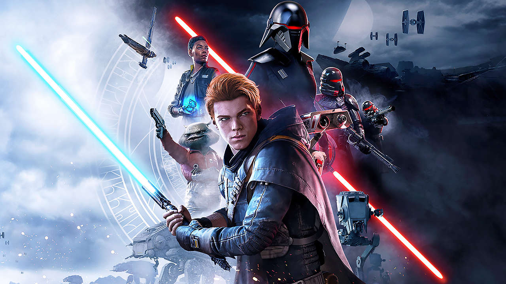

Star Wars
Fatos e Histórias
História
Star Wars (Guerra nas Estrelas) é o título de uma "ópera espacial", nas próprias palavras do seu autor que assim designou o universo de fantasia que compunha este projeto, que foi transformada em uma série de nove filmes de ficção científica. Como subprodutos surgiram também uma franquia literária, uma série de jogos eletrônicos e desenhos animados (incluindo a Nova Trilogia, sequências e adaptações literárias) baseados nas idéias do diretor e roteirista George Lucas.
Filmes
- Star Wars Episódio I: A Ameaça Fantasma / direção George Lucas - 1999
- Star Wars Episódio II: Ataque dos Clones / direção George Lucas - 2002
- Star Wars Episódio III: A Vingança dos Sith / direção George Lucas - 2005
- Han Solo: Uma História Star Wars / direção Ron Howard - 2018
- Rogue One: Uma História Star Wars / direção Gareth Edwards - 2016
- Star Wars Episódio IV: Uma Nova Esperança / direção George Lucas - 1977
- Star Wars Episódio V: O Império Contra-Ataca / direção Irvin Kershner - 1980
- Star Wars Episódio VI: O Retorno de Jedi / direção Richard Marquand - 1983
- Star Wars Episódio VII: O Despertar da Força / direção J.J. Abrams - 2015
- Star Wars Episódio VIII: Os Últimos Jedi / direção Rian Johnson - 2017
- Star Wars Episódio IX: A Ascensão Skywalker / direção J.J. Abrams - 2019
Games
- Star Wars: Jedi Arena (1983) Atari 2600 - ambientado durante a época dos episódios IV a VI
- Star Wars: Droids (1988) Amstrad CPC, ZX Spectrum - baseado na série Star Wars: Droids
- Star Wars Chess (1994) (programa de xadrez) DOS, Sega CD, Windows - ambientado durante a época dos episódios IV a VI
- Star Wars Screen Entertainment (1994) (Screensaver) Windows
- Star Wars: Shadows of the Empire (1996) (Third/First-person shooter) Nintendo 64, Windows - ambientado entre os episódios V e VI
- Monopoly - Star Wars Edition (1997) (Jogo de tabuleiro) Windows - ambientado durante a época dos episódios IV a VI
- Star Wars: Masters of Teräs Käsi (1997) (Luta) PlayStation - ambientado durante a época dos episódios IV a VI
- Star Wars: Yoda Stories (1997) (Aventura) Windows, Game Boy - ambientado entre os episódios V e VI
- Star Wars: Rebellion (1998) (Real-time strategy) Windows - ambientado durante a época dos episódios IV a VI
- Star Wars: Behind the Magic (1998) (Enciclopédia de multimedia) Windows, Macintosh
- Star Wars Trilogy Arcade (1998) (Rail shooter) Arcade - ambientado durante a época dos episódios IV a VI
- Star Wars: Demolition (2000) (Vehicular Combat) PlayStation, Dreamcast - ambientado durante a época dos episódios IV a VI
- Star Wars: Force Commander (2000) (Real-time strategy) Windows - ambientado durante a época dos episódios IV a VI
- Star Wars: Bounty Hunter (2002) (Ação) PlayStation 2, GameCube - ambientado entre os episódios I e II
- Star Wars: The Clone Wars (2002) (Ação) PlayStation 2, GameCube, Xbox - ambientado entre os episódios II e III
- Star Wars: Flight of the Falcon (2003) (Ação/Simulação) - ambientado durante a época dos episódios IV a VI
- Star Wars Trilogy: Apprentice of the Force (2004) Game Boy Advance - ambientado durante a época dos episódios IV a VI
- Star Wars: Republic Commando (2005) (First-person shooter) Windows, Xbox - ambientado entre os episódios II e IIIv
- Star Wars: Lightsaber Battle Game (2005) Handheld TV game - ambientado durante toda a saga
- Star Wars: Lethal Alliance (2006) (Ação-aventura) PlayStation Portable, Nintendo DS - ambientado entre os episódios III e IV
- Star Wars: The Best of PC (2006) (Compilação) Windows
- Star Wars: Original Trilogy (2007) Jakks Pacific TV Game
- Star Wars: The Clone Wars - Lightsaber Duels (2008) Wii
- Star Wars: The Clone Wars - Jedi Alliance (2008) Nintendo DS
- Star Wars Jedi: Fallen Order (2019) Xbox One, PlayStation 4, Microsoft Windows
Fatos
A icônica "Marcha Imperial"
(também conhecida como o tema
de Darth Vader)
nunca foi realmente tocada no Episódio IV - Uma Nova Esperança.
A música foi composta originalmente para o "Episódio V - O
Império Contra-Ataca".
Apesar de parecer ter sido editada na edição especial de "Uma
Nova Esperança" posteriormente.

Star Wars" é a terceira franquia
mais bem-sucedida na
história do cinema A mais bem sucedida é o Universo Cinemático
Marvel
e a segunda é a franquia de Harry Potter.